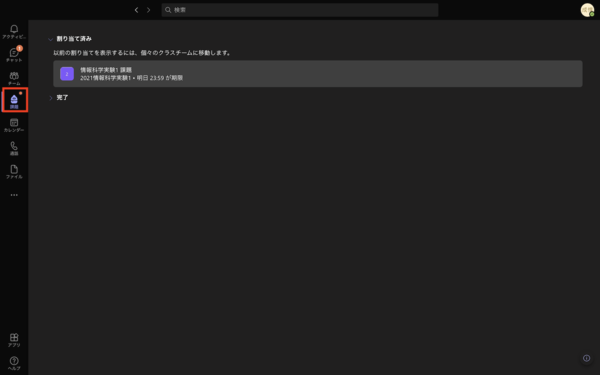
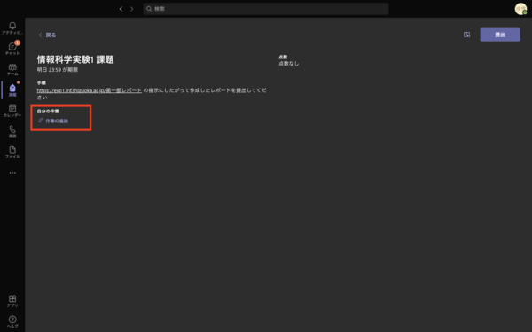
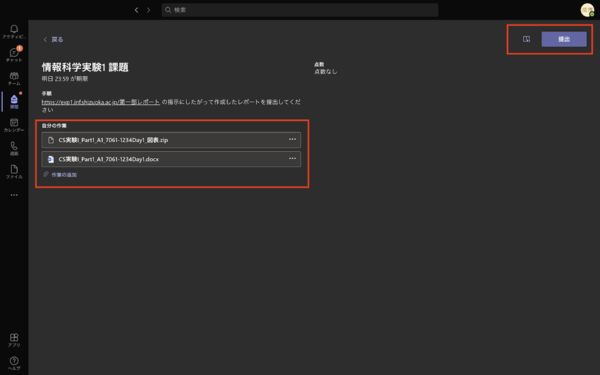
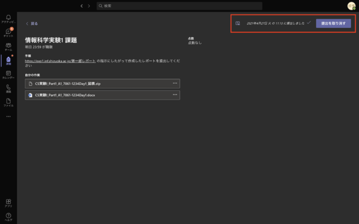

第一部レポート - 情報科学実験 I
Contents
第一部レポート - 情報科学実験 I¶
[TOC]
レポートに関して¶
第一部の内容を整理してレポートを提出します．
トップページに記載の通り，レポートは初版提出と最終版提出に分かれており，初版提出後にピアレビューを行い，改善した上で最終版を提出します．
注意: 予めレポートの初版提出の期日を設定していますが，その直前の回が終了してからレポートを作成し始めてピアレビューに間に合うように初版を完成できるという意味ではまったくありません．
毎回の実験の中でレポートの材料を整理し作成してきたことを前提とし，最終的に全体の論旨や整合性を確認し，不足している情報については再実験を行うなどの対応に時間が必要だと思われるので設定しているということです（そのための時間を明示的に設定しているのは第一部のみ．第二部以降は自身でレポート執筆の計画を立てて取り組むことになります）．
レポート提出方法（初版提出まで）¶
実験の各回の内容についてまとめたデータを Teams の課題機能を使って提出してください． 以下のテンプレートを参考に作成し，表紙の記述を「初版」としてください．
レポートの提出先は Teams になりますのでご注意ください． 提出するレポートの形式は
MS Word 形式の初版のレポートファイル（CS 実験 I_Part1_A1_7091-1234.docx）
レポートデータ（レポート作成にあたって利用した図表，ソースコードなどの元データを zip 形式でまとめたもの：CS 実験 I_Part1_A1_7091-1234 データ.zip）
等となります（初版や最終版でファイル名が変わるので以下を確認してください）．
レポート提出方法（初版提出）¶
第一部は個人でレポートを作成して提出します．
以下のテンプレートを参考に作成し，表紙の記述を「初版」として下さい． 「最終版提出時個別レビュー」に関する記載は初版提出時は削除してください．
レポートの提出先は Teams の課題機能を使います． 提出するレポートの形式は以下のファイル名の Word ファイルおよび ZIP アーカイブとします． 例えば，A1 グループの学籍番号 7091-1234 の人は以下のファイル名で提出してください．
CS 実験 I_Part1_A1_7091-1234 初版.docx
CS 実験 I_Part1_A1_7091-1234 初版データ.zip
Word ファイルはレポートファイル本体となります．zip ファイルにはレポート作成にあたって利用した図表，ソースコードなどの元データを格納してください．
レポート提出方法（最終版提出）¶
ピアレビュー時の初版レポート（履歴やコメント残したもの，Word ファイル）と，ピアレビューを受けて改善した最終版（ピアレビューチェック表やコメント等全て削除したもの）の最終版レポートを提出してください． データファイル（zip）については，ピアレビュー時のものは必要ありませんので，最終版のものだけを提出してください．
最終版は初版からのレポート改善の他に以下を追加して下さい．
各自で行ったピアレビューの活動に対する考察のページを最後に追加してください．
表紙の記述を「最終版」としてください．
最終版ではピアレビューチェック表ページやメンバからのコメントは全て削除してください．
提出レポートに対する個別のレビューを希望する場合は「最終版提出時個別レビュー」を「希望する」にしてください．そうでない場合は「希望しない」にしてください（評価に影響しません）．
レポートの提出先は Teams の課題機能を利用します． 提出するレポートの形式は以下のファイル名の Word ファイルおよび ZIP アーカイブとします． 例えば，A1 グループの学籍番号 7091-1234 の人は以下のファイル名で提出してください．
CS 実験 I_Part1_A1_7091-1234 初版.docx
CS 実験 I_Part1_A1_7091-1234 初版データ.zip
提出するアーカイブファイルには以下のデータを格納してください．
MS Word 形式の最終版のレポートファイル（CS 実験 I_Part1_A1_7061-1234 最終版.docx）
MS Word 形式のピアレビュー版のレポートファイル（CS 実験 I_Part1_A1_7061-1234 ピアレビュー版.docx）
レポートデータ（レポート作成にあたって利用した図表などのデータ：CS 実験 I_Part1_A1_7061-1234 最終版データ.docx）
レポート提出方法（期限に間に合わなかった場合（なるべく早めにメール提出））¶
提出先は以下のメールアドレスへ送信してください．
Cc: <自分のメアド>
Subject: CS 実験 I_Part1_AorBx-7091-XXXX（最終版 or 更新版）
xxxx 部分は各自の学籍番号を記入 （例: CS 実験 I_Part2_A3-7091-1234）
添付ファイル名：CS 実験 I_Part1_A3-7091-1234 最終版.docx CS 実験 I_Part1_A3-7091-1234 最終版データ.zip
以下のファイルを zip 形式でアーカイブしたファイルを添付して下さい。
レポート（.docx）
レポートデータ（レポート作成にあたって利用した図表などのデータ）
表紙ページに，班員の学籍番号，氏名，メアドも忘れずに書くこと
期限後に提出物の誤りを見つけて再提出したい場合は，件名の最後に「(2 回目)」というように分かるよう記載すること メールの本文には，以下（あくまで例です）のように記載すること
情報科学実験Iご担当の先生方へ
グループ3Cの70xx-00xx静大太郎です．
期限を遅れてしまい大変申し訳ございませんでしたが
第一部の最終レポートを提出させていただきます．
お手数おかけいたしますがどうぞよろしくお願いいたします．
----------
70xx-00xx 静大太郎
レポートの書き方¶
レポートでは課題ごとに実験の目的，実験環境，実験結果，結果に基づく考察を記載してください．
以下に MS Word のテンプレートを示しますので，表紙・目次・各章の構成・図表の掲載方法・引用文献の引用方法／掲載方法・付録の掲載方法など，指定されたスタイルに従ってレポートを作成して下さい．
レポートには実験を再現するために必要な情報を盛り込む必要があります．必要に応じて章節を増やしても構いません．
1. Day1 環境構築とプロトコル解析
1.1 実験の目的
1.2 実験環境
1.3 実験結果
1.4 考察
2. Day2 通信性能の計測
2.1 ...
参考文献や以下のサイトなども参考に，体裁の整った良いレポートを作成してください．
レポートの書き方 (学内 ONLY, written by Professor Shiomi!!)
レポートテンプレート¶
以下に MS Word のテンプレートを示します．
テンプレートの内容は以下のようになっています．
表紙
レポートピアレビュー用のシート
目次
図目次
表目次
レポート本文
引用文献
付録
MS Word のスタイルや目次，図表，引用文献の機能を利用していますので，これらの機能を使ってレポートを作成して下さい（そうすれば，目次・図表目次・引用文献などは自動的に生成されますし，本文中の参照とのズレも抑制されます）．引用文献のスタイルは APA（MS Word は APA 6 に対応しています）を使っています．
MS Word の参考リンク¶
-
特に以下は参考になります．
第 1 回 画像を好きな場所に配置できない
第 6 回 インデントとぶら下げ
第 14 回～ 16 回のスタイル関係
第 19 回 アウトラインレベルの指定
第 21 回 目次の作成
第 22 回 箇条書きとリストのレベル
第 24 回 改ページ位置の自動修正
第 33 回 変更履歴の活用
-
特に以下は参考になります．
スタイルの適用、スタイルの変更
段落番号・箇条書き・アウトライン
図の挿入と調整
グラフの挿入
ページ番号
図形の挿入
表の挿入と体裁
目次の作成と更新
引用文献・文献目録・資料文献の管理
図表番号・図表目次・更新・相互参照
コメントの活用
編集履歴の記録
アウトライン（ただし，アウトラインは，スタイルをきちんと設定していてこその機能です）
ピアレビューの準備¶
Day4 では各自のレポートのピアレビューを行います． そのための準備として，上記のテンプレートのレポートピアレビューのページをグループの人数分コピーして作っておくようにしてください． （ピアレビューを行う人数がわからない場合は 4 人分のページを作成しておいてください．こちらで印刷時に調整します） 最終的には以下のような構成になります．
表紙
レポートピアレビュー（1人目用）
レポートピアレビュー（2人目用）
レポートピアレビュー（3人目用）
：
レポートピアレビュー（N人目用）
目次
：
ツール紹介¶
レポートを作成する際に便利なツールを紹介します．
このツールを利用することが必須ではありません．むしろ，自分の方法にあったツールを自分で探す（探す方法を確立する）方がより重要です．
シーケンス図などの UML の図の作成¶
シーケンス図などの UML で定義された図を作成する場合は，Illustrator や PowerPoint などのドローソフトで作成しても良いですが，モデリングツールを利用しても良いでしょう．
ネットワーク構成図の作成¶
Illustrator や PowerPoint などのドローソフトとルータ等の機材のフリー画像（PowerPoint の場合は「挿入 → ネットワーク画像」から “ネットワーク機器” などのキーワードで検索（クリエイティブ・コモンズライセンスに限定））を使って作成しても良いですが，ネットワーク構成図を作成する機能を持つアプリケーションを使っても良いでしょう．
-
MS Visio に同梱されているネットワーク関係のステンシルでも十分だが，特定メーカの機器のステンシルを使いたい場合はここからダウンロード．
-
新規に作成するダイアグラムの種類から Network Diagram を作成
blockdiag - simple diagram images generator
テキストベースでグラフを作成するツール．ネットワーク構成図を作るにはnwdiagを用いると良い．
スクリーンショットの撮り方¶
画面のスクリーンショットを撮る場合は OS 標準の方法と専用のアプリケーションを導入する方法があります．機能に多少の違いがありますので，必要なスクリーンショットに合わせて使い分けてください．
レポートにスクリーンショットを貼り付ける場合のファイルフォーマットは PNG にします（JPG のような印刷時に劣化するフォーマットを避けるという意図です）．
Windows 標準の方法
専用アプリケーションの例
提出前のチェックリスト¶
構成¶
使用機材は明記しているか？
最低限，読んだ人が実験を再現できるだけの情報が必要です．
書式¶
指定したフォーマットを使用しているか？
学会，会社，行政文書など，すべてに規定されたフォーマットがあります．
プリントフォーマットが一致しているだけではなく，ドキュメント上で指定されたスタイルが指定されている必要があります．
すべての図と表にキャプションがついているか？
すべての図と表は本文中で引用されているか？
すべての図と表は本文中で引用されている箇所が明確か？
読者が意図通りの箇所を参照できるような本文中の表現，図・表の表現が必要です．特に図・表に含まれる情報量が過剰な場合，読者は混乱します．本文の論旨に必要な箇所を本文中の図・表とし，全体の情報は付録で提示するなどの工夫を検討してください．
図・表のキャプションの書式は適正か？
図のキャプションは図の下側に配置．
表のキャプションは表の上側に配置．
すべての参考文献は本文中で引用されているか？
フォントの種類やサイズが統一されているか？
文書全体で 1 つのフォントに統一する必要はありませんが，第 1 章の見出しはボールド体，第 2 章の見出しは明朝体などといった不整合は許容されません．
句読点は統一されているか？ (、。もしくは，．のいずれかに統一すること)
半角のカンマ・ピリオド(, . )を使う場合には直後にスペースが必要です．
文体¶
箇条書きを必要以上に多用していないか？
こそあど言葉(これ，それ，このなど)を多用していないか？
読者が参照先に迷うため，極力こそあど言葉は避けてください．
具体的な名詞を使って代替することができるはずです．
接続詞(そのため，しかしなど)を必要以上に多用していないか？
接続詞を多用しなければならないときは文章の構成がおかしい場合が多いです．
一般的には接続詞は続く文章を強調したい場合に使います．
必要以上に 1 文が長くなっていないか？
「～し，」という表現を多用していないか？
「～し，」という言葉を使うと一見文章がつながってみますが，実は論理的につながっていない場合が多いです．
「～し，」という表現を使いそうになったら，2 つの文章に分けることができないか考えてみてください．
グラフ¶
適切なグラフの種類を選択しているか？
用途に応じてグラフの種類が存在します．例えば，折れ線グラフと散布図は見かけ上類似点がありますが，利用目的が異なります．折れ線グラフは 1 つのものごとの移り変わりを表現する場合（典型的には時系列データ），散布図は 2 つの数値データの関係を表現する場合に採用します．これ以外のグラフについても，用途に合わせて適切なグラフの種類を選択してください．
軸ラベルが用意されているか？
軸ラベルには単位が記載されているか？
グラフ中の値を読むことができるサイズ・品質か？
対数表示の利用も選択肢のひとつです．
MS Excel の場合は軸の書式設定で「対数目盛を表示する」をチェックします．

補足：Teams 課題機能によるレポート提出方法¶

左側のタブから「課題」を選択し，「割り当て済み」の課題から対象のレポートを選択します

「作業の追加」をクリックして提出するファイルをアップロードします．

ファイルがアップロードされていることを確認したら，右上の「提出」ボタンをクリックします

右上の提出ボタンが「提出を取り消す」に変わって，提出日時が表示されていたら提出完了です．